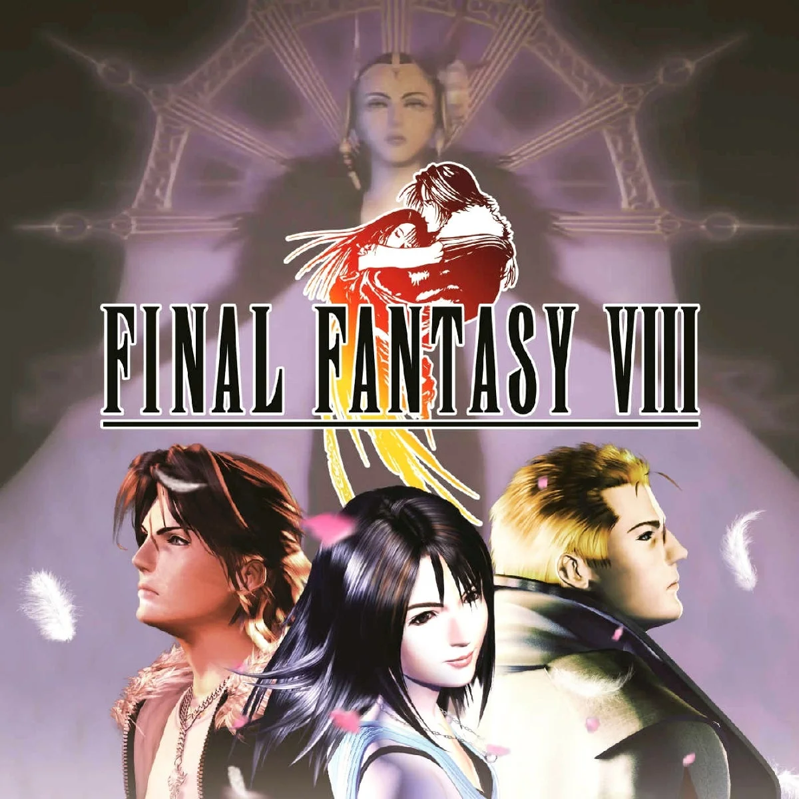
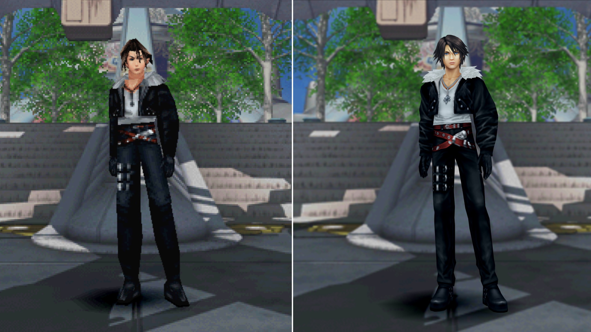
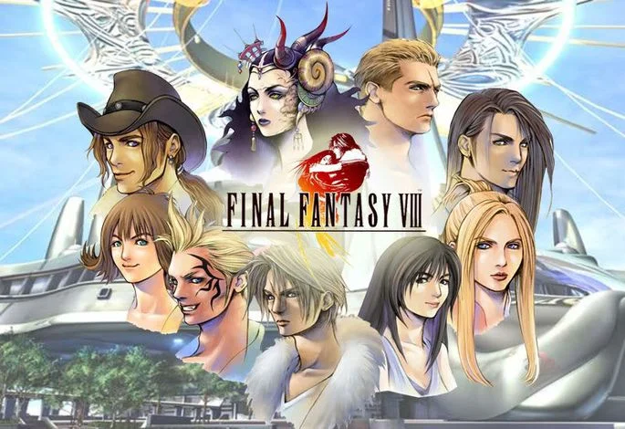
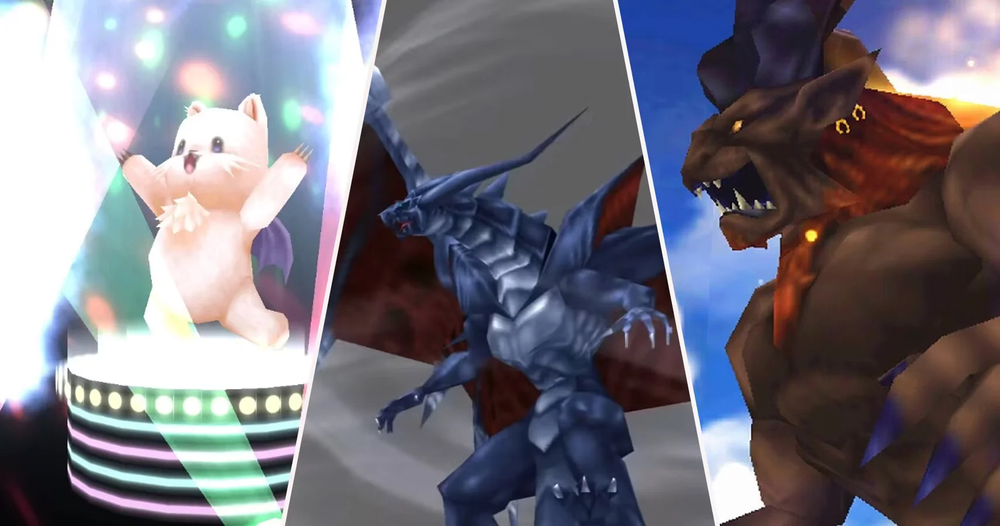

FINAL FANTASY VIII GUIA COMPLETA
Nota: la vida de los enemigos puede variar dependiendo del nivel de los personajes principales. Los que aparecen en esta guía son meramente indicativos, si tienen un nivel alto, es posible que sean mas fuertes.
Historia del juego
Final Fantasy 8 sale al mercado en el año 1999, para la plataforma PS. Al cabo de unos años apareció una versión del juego para PC, este juego cuenta con la particularidad de ser uno de los más vendidos en la historia de la plataforma PS, ya en el 2023 cuenta con muchas versiones, destacandose la ultima para PC en Steam, la version REMASTERED, con mejoras graficas importantes.
Este juego marcó una diferencia con los anteriores, en cuanto a la ambientación del mismo. Éste se desarrolla en un mundo futurista, aunque tiene elementos del mundo medieval (una característica de los juegos de la saga). El juego tiene como protagonista a un joven estudiante llamado Squall Leonheart, éste obtiene su grado de SeeD y le asignan algunas misiones militares. La historia tiene como punto central a una hechicera llamada Edea, ésta tiene bajo su control al presidente de Galbadia para que ataque a los países vecinos. Esta situación no se pasa por alto y se crean verdaderos grupos de resistencia para oponerse a los deseos expansionistas de Edea, pero la trama es más complicada de lo que parece. Edea es manipulada por Artemisa, una hechicera del futuro que desea apoderarse del mundo. Es allí que Squall y sus compañeros viajan al futuro para hacerle frente a Artemisa. Puede notarse también una historia paralela que se mostrará en los sueños de Squall y sus amigos.
El juego cuenta con jardines, sitios donde se desarrolla la trama del juego. Los jardines son tres: El Jardín de Balamb, El Jardín de Galbadia y El Jardín de Tarabia. El mapa de Final Fantasy se pueden observar 5 países: Balamb, Galdabia, Trabia, Centra y Esthar; en los cuales hay aldeas, jardínes y diferentes zonas que nos darán muchas horas de entretenimiento. También podremos encontrarnos con cavernas, islas y cuevas, durante nuestra aventura. Cuanta con 6 personajes que a lo largo del juego se uniran a nosotros, Squall ya antes nombrado; Rinoa, Zell, Selphie, Irvine y Quistis y en ocasiones controlaremos otros 3 personajes llamados Laguna, Kyros y Ward En el apartado PERSONAJES puedes conocer mas!
Los Guardianes de Fuerza o G.F. pueden ser utilizados, además de ataque, como ejecutores de acciones específicas para cada personaje del grupo, mientras más se usen, mas afinidad tendra con el personaje y más rápido podra ser invocado. Tambien estos guardianes nos dejaran (depende de cada uno) enlazar magias a nuestras estadisticas principales para volvernos mas fuerte, algo interesante en esta entrega ya que no solo sera subir de nivel. Los Guardianes de Fuerza pueden obtenerse durante el combate, quitándoselos a un oponente en batalla, venciendo a uno de ellos o utilizando objetos especiales.
Final Fantasy 8 es un juego algo diferente a los anteriores juegos de la saga. Posee una historia distinta, basada en un mundo del futuro, una especie de mezcla de Ciencia Ficción y Mundo Medieval; elementos nuevos que nos permiten conectarnos con el juego, de manera nunca antes vista; lo cual hace de FF 8 una de las versiones más exitosas de esta fabulosa saga de juegos de RPG.
EMPIEZA NUESTRA AVENTURA: JARDIN DE BALAMB